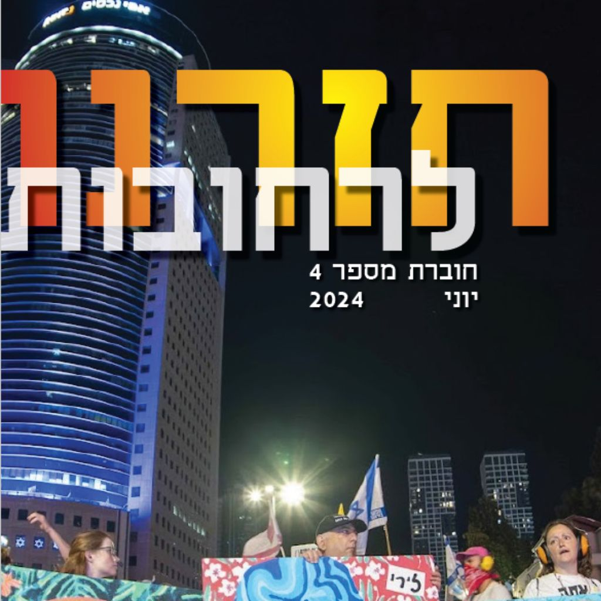

במוצאי שבת, 29 באפריל 2023, ח׳ באייר תשפ״ג, עלו אקדמאיות ואקדמאים לבמות בשלושים וחמישה מוקדי מחאה, מאילת ועד קריית שמונה, ואמרו בקול אחד דבר שנשמע אז מובן מאליו, שבלי דמוקרטיה אין אקדמיה ובלי אקדמיה אין דמוקרטיה. התגייסות רחבה כזאת אינה מובנת מאליה, משום שהדיון האקדמי בנוי על ספק ועל מחלוקת, ואף על פי כן התגבש קונצנזוס לארכה ולרוחבה של האקדמיה. הנאומים של אותו ערב, של חתני פרס נובל ופרס ישראל, של נשיאים ורקטורים ושל חברות וחברי סגל מן השורה, כונסו בחוברת הראשונה. מאז ראו אור עשרים ושבע חוברות בעברית ושלוש באנגלית.
שלושה שמות נשאה הסדרה. ״יצאנו לרחובות״, כשהבנו שמתרחשת כאן הפיכה משטרית. ״חזרנו לרחובות״, אחרי ההפוגה שכפה השבעה באוקטובר, כשהתברר שהמלחמה והאבל אינם עוצרים את ההפיכה אלא משמשים לה לעתים מסך עשן, וכשהמחאה נעשתה גם קריאה יומיומית להשבת החטופים. ״נשארים ברחובות״, לאחר שכל החטופים שבו, החיים אל משפחותיהם וארבעים ושישה לקבורה, ומשהתברר שאין רגע אחד שבו אפשר לומר שהמאבק הושלם ואפשר לשוב הביתה. שינוי השם לא היה משחק לשוני אלא תיאור מדויק של ההתפכחות האזרחית שעברנו. עשרים ושבע החוברות הן תיעוד של תקופה היסטורית אחת.
מי שיקרא בהן ברצף ימצא הרבה יותר מנאומי אקדמאים. יש בהן אימהות ואבות שכולים, בני משפחות של חטופים ופדויי שבי, מפונים מן העוטף ומן הצפון, אזרחים ערבים הנאבקים על עצם הזכות לביטחון אישי, מחנכים, עיתונאיות, משפטנים, רופאים, מפקדים לשעבר, סטודנטים וסופרים. יש בהן גם מכתבי הנהלות האוניברסיטאות והמכללות, גילויי דעת של אגודות הסטודנטים והחלטות סנאט, מן הימים שבהם ״בלי דמוקרטיה אין אקדמיה״ חדל להיות סיסמה והפך לתיאור מצב.
התמונות המלוות כל עמוד ועמוד הן פרי שיתוף פעולה מתמשך עם סיירת הצילום והרחפנים, קהילה של מתנדבות ומתנדבים המתעדים את המחאה מן הקרקע ומן האוויר, בתל אביב ובחיפה, בירושלים ובבאר שבע, בשער הנגב ובעשרות צמתים ברחבי הארץ. הם עומדים שם בגשם ובחום, שבוע אחר שבוע, ומראים לנו את מה שאיננו יכולים לראות בעצמנו, את גודלנו. שמותיהם מופיעים לצד כל תצלום ובעמוד התודות של כל חוברת, וזו ההוקרה המעטה שביכולתנו להעניק להם.
מילים הנאמרות בכיכר מתאדות עם כיבוי הרמקול. מילים כתובות נשארות. החוברות האלה הן פרוטוקול של חברה אזרחית שסירבה להתרגל, ועדות לדורות הבאים שהיו כאן מי שלא שתקו.
החוברות

SpeakOut
Academics for Israeli Democracy (AID) is an action protest group of Israeli academics who work to fortify democratic values within Israel, based on principles of freedom, equality, civil rights, separation of powers, and the rule of law.